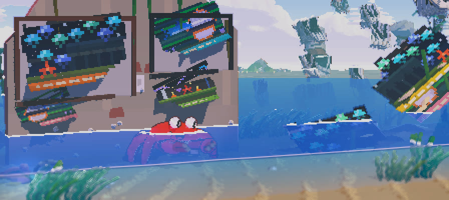
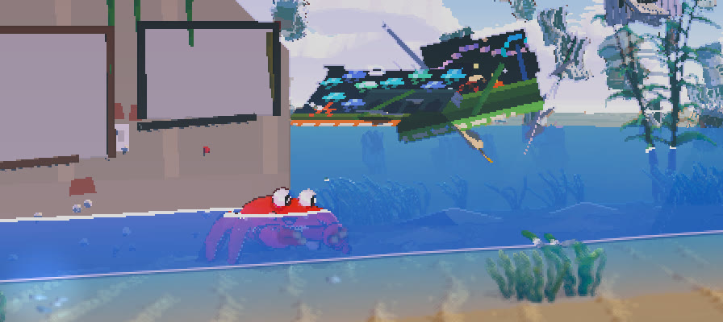
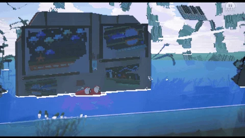

游戏项目 · USC Games · That Game Jam · 五人团队
愿此身如风（Light as Wind）
一款梦幻的像素风横版游戏，穿越大海，奔向遥远的天空。我在团队中担任设计与工程师：独立负责十个关卡中的三个，并搭建了游戏所依赖的多套物理、着色器与破碎系统。
我的角色
设计 · 工程师
我从头到尾负责了第 04、06 和 10 关——包括场景、路线与机制——同时参与了全部十个关卡的设计、交互与 bug 修复。
工程方面，我专注于物体运动时的手感：被风卷起的纸张、剑鱼的游动、螃蟹的藤蔓摆荡，以及会碎裂的道具。我还为游戏中的“空气墙”编写了着色器。
项目有一条严格的规则：所有系统的逻辑都用不依赖引擎类型的纯 C# 编写，以便日后脱离 Unity；每一项改动都要先用数据验证——探针、日志和路线机器人——然后才看截图。
- 引擎
- Unity 6 / C# / HLSL
- 团队
- 5 名学生，USC Games
- 平台
- Windows（itch.io）
- 状态
- 第一部分已发布
关卡设计
我负责的三个关卡


系统
物理、着色器与破碎
05 项亮点
01 · 模拟
被风吹起的纸张
每张纸以下风侧边缘为铰链旋转掀起，最多翻起 34°，随后脱离。在空中，它的速度以指数追赶的方式逐渐趋近目标风速；落叶式摆动（±0.3 m，周期 2.1 s）把倾斜与摆荡耦合起来，让纸张在每次转向时顺势倾斜。
风到来之前，纸角由欠阻尼弹簧驱动轻轻颤动。墙面约束让海报始终保持在墙前，并沿墙面滑落，绝不会穿墙。
- 每阵风
- 15–17 张纸，在 0.22–2.33 s 内全部飞出画面
- 穿墙深度
- 0.7–2.6 m → 0

02 · 着色器 · Worley 噪声
空气墙：梦境之海的表皮
隐形墙需要看起来像梦境的一部分，而不是 bug。墙面呈现一张缓缓漂移的 Voronoi / Worley 网：线条按到单元边界的真实距离绘制，因此在任何角度下都保持一像素宽且连续不断；每条边界取一种浮游生物的颜色，其间点缀着几颗闪烁的金色光点。
撞击时会向外扩散一对波环，把网推开，撞击点还会飘出气泡。只有靠近时帷幕才会显现（1.8 m 开始出现，0.95 m 时完全显现）。亮度采用干净的分级，不做抖动处理，以可移植的 HLSL 写成，基于项目自己的头文件。
03 · 游戏手感
剑鱼的游动
剑鱼采用金枪鱼式的脊柱波动游泳，配合按质量加权的反冲，让头部像真鱼一样与尾部反向摆动；尾鳍摆动频率由 Strouhal 数决定。
我负责调校它的操控手感：在真正碰到墙之前不会减速（距离沿运动路径从吻尖量起），沿洞顶和草坡滑行时不损失速度，跃出水面之间可以下潜，上下转向也更加灵敏。
04 · 模拟
螃蟹的藤蔓摆荡
螃蟹本身是一个单摆，藤蔓只是跟随它的钳子。抓取判定在画面平面内进行，因为在 2.5D 游戏里，纯 3D 距离总是抓不准。玩家只能顺着摆动的相位发力，能量上限（最大 72°）防止长藤蔓把螃蟹甩出画面。
每根藤蔓是一条 18 个节点的 Verlet 绳索，进行 8 次约束迭代，带有水阻和缓慢摆动；钳子以下的节点会被推出蟹壳，避免穿模。
- 第 7/8/9 关平均帧耗时
- 6.4/7.7/8.5 → 1.7/2.6/2.7 ms
- 超过 16.7 ms 的帧数
- 89/165/166 → 4/0/0
05 · 破碎
把关卡切成碎块
游戏中没有任何导入的网格，所以破碎意味着切割程序生成的几何体。在第 06 关坍塌的隧道中，洞顶会自行碎裂：先焊接顶点，再用 union-find（并查集）归组成封闭的岩块；较长的岩块用随机平面裁切（Sutherland–Hodgman，所有顶点属性都会插值），每个切口再用扇形封口，确保每块碎片都是封闭实体。
切割以协程运行，每帧预算 4 ms，在玩家距离还有 60 m 时就开始：610 块岩石在 140–220 帧内变成 169 块碎片。较小的道具则使用预先切好的碎块，相邻碎块共享接缝；碎片完全绕开物理引擎——每帧仅约 0.013 ms。
- 隧道坍塌
- 610 块岩石 → 169 块碎片
- 道具击碎最差帧
- 14.6 → 3.3 ms